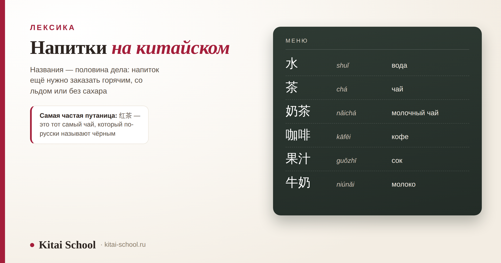
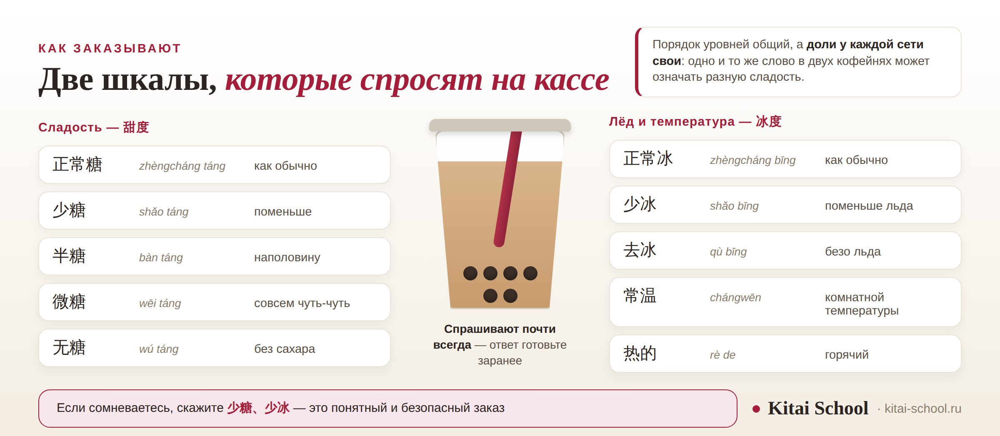

Лексика
Напитки на китайском: вода, чай, кофе и молочный чай — как называются и как их заказать


Напитки на китайском нужны в первый же день: за водой, чаем или кофе человек идёт раньше, чем успевает выучить что-то сложное. Но одних названий не хватает: в чайной у вас спросят про температуру, лёд и сахар, и если ответить нечем, напиток придёт таким, каким его делают по умолчанию. Разберём обе половины — как называются напитки и какими словами их заказывают.
Общее слово — 饮料 (yǐnliào), «напитки». Воду приносят горячей: холодную просят отдельно. 红茶 — это наш чёрный чай, а 黑茶 — другая категория. В чайной спросят про сахар и лёд, ответ лучше знать заранее. Кофейные названия — заимствования: 拿铁, 卡布奇诺, 美式. Уровни сладости у каждой сети свои, надёжнее просить самый несладкий вариант.
Десять слов, с которых стоит начать
Этого набора хватает и в кафе, и в магазине у дома. Четвёртая колонка — то, о чём словари молчат: что именно вам принесут.
| Слово | Пиньинь | Перевод | Что за этим стоит |
|---|---|---|---|
| 水 | shuǐ | вода | в кафе принесут горячую, если не уточнить |
| 矿泉水 | kuàngquánshuǐ | минеральная вода | та, что продаётся в бутылке |
| 茶 | chá | чай | общее слово; какой именно — уточняют отдельно |
| 奶茶 | nǎichá | молочный чай | чай с молоком и, как правило, с топпингом |
| 咖啡 | kāfēi | кофе | слово записано по звучанию |
| 牛奶 | niúnǎi | молоко | в кафе чаще как добавка, а не напиток |
| 酸奶 | suānnǎi | питьевой йогурт | часто в стакане с трубочкой |
| 豆浆 | dòujiāng | соевое молоко | завтрак: подают горячим |
| 果汁 | guǒzhī | сок | перед словом ставят название фрукта |
| 可乐 | kělè | кола | по звучанию; в меню и в магазине |
Вода. Если сказать просто 水, принесут горячую: это принятый порядок, а не оплошность. Про знак 水 и про ключ «три капли воды» есть отдельный разбор: иероглиф «вода» 水. Сок почти всегда идёт с названием фрукта впереди: 苹果汁 (píngguǒzhī) яблочный, 橙汁 (chéngzhī) апельсиновый. Из алкоголя в меню встретятся 啤酒 (píjiǔ) пиво и 白酒 (báijiǔ) крепкая зерновая водка — 白酒 это не «белое вино», и перепутать неприятно. Вся столовая лексика целиком разобрана отдельно: еда на китайском.
Чай: шесть категорий и главная путаница
Китайская классификация делит чай на шесть категорий по способу обработки листа, и названия построены одинаково: цвет плюс 茶.
| Название | Пиньинь | Цвет в названии | Что это |
|---|---|---|---|
| 绿茶 | lǜchá | зелёный | самая привычная категория, лист не окисляют |
| 白茶 | báichá | белый | минимальная обработка, светлый настой |
| 黄茶 | huángchá | жёлтый | редкая категория |
| 青茶 | qīngchá | улун | второе название — 乌龙茶 wūlóngchá |
| 红茶 | hóngchá | красный | это и есть то, что по-русски зовут чёрным |
| 黑茶 | hēichá | тёмный | сюда относят пуэр — 普洱茶 pǔ'ěrchá |
Вот главная поправка, ради которой стоило затевать таблицу. 红茶 — это тот самый чай, который по-русски называется чёрным. Китайское название считает по цвету настоя, русское — по цвету сухого листа, отсюда и расхождение.
Отсюда и частая ошибка: человек хочет привычный чёрный чай, переводит слово дословно и просит 黑茶 — а получает тёмный постферментированный чай, к которому относится пуэр, 普洱茶 (pǔ'ěrchá). Вкус у него плотный, землистый, на ожидаемый не похожий. Ещё одно слово, которое принимают за категорию, — 花茶 (huāchá): это не седьмая категория, а чай с цветами, самый известный — жасминовый 茉莉花茶 (mòlìhuāchá).
Как заказать: температура и лёд
Теперь вторая половина дела: в чайной вам зададут два вопроса, и к ним стоит быть готовым.

Минимальный набор ответов: 热的 (rè de) горячий, 冰的 (bīng de) со льдом, 常温 (chángwēn) комнатной температуры. Частица 的 работает как «такой-то», и отвечать можно одним этим словом.
Для воды есть три формы: 热水 (rèshuǐ) горячая, 冰水 (bīngshuǐ) со льдом, 常温水 (chángwēn shuǐ) комнатной температуры. Последнюю просят чаще всего.
Размер стакана спросят тоже: 大杯 (dà bēi) большой, 中杯 (zhōng bēi) средний, 小杯 (xiǎo bēi) маленький. Счётное слово для напитков — 杯, «стакан»: 一杯咖啡 (yì bēi kāfēi), одна чашка кофе. Как устроены числа, с которыми это слово стоит, разобрано здесь: цифры от 0 до 10 на китайском.
Молочный чай: сахар и топпинги
У 奶茶 (nǎichá) свой порядок заказа: сначала напиток, потом уровень сахара, потом лёд, потом топпинг.
| Слово | Пиньинь | Что это | Пояснение |
|---|---|---|---|
| 珍珠 | zhēnzhū | тапиока | те самые тёмные шарики; отсюда 珍珠奶茶 |
| 椰果 | yēguǒ | кокосовое желе | кубики, мягче тапиоки |
| 布丁 | bùdīng | пудинг | по звучанию от английского слова |
| 仙草 | xiāncǎo | травяное желе | тёмное, с горчинкой |
Самый известный вариант — 珍珠奶茶 (zhēnzhū nǎichá), с тапиокой. 珍珠 дословно «жемчужины».
Ученица полгода покупала молочный чай и каждый раз жаловалась на одно и то же: слишком сладко. Слов для заказа она не знала и просто показывала на витрину.
Выучили шкалу сладости, и она стала просить 半糖. В одной сети это действительно оказалось вдвое меньше. В другой разницы она почти не почувствовала и решила, что её не поняли.
Поняли правильно — просто за одним и тем же словом у разных сетей стоят разные доли сиропа. Единой шкалы не существует, и спорить тут не с кем.
Пришли к простому решению: называть не уровень, а результат. Фраза «сделайте самый несладкий вариант» работает в любой чайной, а уровни пригождаются там, где вы уже знаете, чего ждать.
Фраза, которой эта история закончилась, звучит так: 最不甜的那种 (zuì bù tián de nà zhǒng) — «самый несладкий вариант». Её понимают везде, и она не требует знания внутренней шкалы конкретной сети.
То же относится и ко льду. 少冰 в одном месте означает пару кубиков, в другом — половину обычного количества. Если холодное вам не нужно вовсе, надёжнее сказать 去冰 или 常温: эти два слова понимают одинаково везде.
Кофе и другие заимствования
Кофейная часть меню устроена проще, чем кажется: почти все названия записаны по звучанию. Знаки в них подобраны под звук, а не под смысл, и переводить их по частям бесполезно.
| Слово | Пиньинь | Перевод | Как получилось |
|---|---|---|---|
| 咖啡 | kāfēi | кофе | общее слово |
| 美式 | měishì | американо | дословно «американский» |
| 拿铁 | nátiě | латте | по звучанию итальянского слова |
| 卡布奇诺 | kǎbùqínuò | капучино | четыре знака только ради звучания |
| 摩卡 | mókǎ | мокко | там же, в кофейной части меню |
Исключение — 美式 (měishì): это не звукоподражание, а сокращение от «американский стиль». По той же модели строятся другие названия с 式, так что слово узнаётся легко.
Полезно знать и две добавки, которые спросят вместе с кофе: 糖 (táng) сахар и 奶 (nǎi) молоко. Отказ строится проще всего через 不要 (bú yào) «не надо»: 不要糖 — без сахара, 不要奶 — без молока.
Сама кофейня называется 咖啡店 (kāfēidiàn), чайная — 奶茶店 (nǎichádiàn), если речь о молочном чае, или 茶馆 (cháguǎn), если о традиционной чайной с заваркой в чайнике. Это разные заведения с разным набором напитков, и названия их не путают.
Отсюда полезное наблюдение для всей лексики: если слово выглядит странно и не раскладывается на понятные части — вероятно, это заимствование. 咖啡, 巧克力 (qiǎokèlì) шоколад, 三明治 (sānmíngzhì) сэндвич устроены одинаково.
Что сказать в кафе и в магазине
Одиннадцать фраз, которых хватает на любой заказ. Их стоит знать наизусть: в чайной очередь движется быстро, и времени собирать предложение не будет.
| Фраза | Пиньинь | Перевод |
|---|---|---|
| 我要一杯奶茶 | wǒ yào yì bēi nǎichá | мне один молочный чай |
| 热的，谢谢 | rè de, xièxie | горячий, спасибо |
| 少糖，少冰 | shǎo táng, shǎo bīng | поменьше сахара, поменьше льда |
| 不要冰 | bú yào bīng | безо льда |
| 有常温水吗 | yǒu chángwēn shuǐ ma | есть вода комнатной температуры? |
| 加珍珠 | jiā zhēnzhū | добавьте тапиоку |
| 大杯还是小杯 | dà bēi háishi xiǎo bēi | большой стакан или маленький? — это спросят вас |
| 在这儿喝 | zài zhèr hē | буду пить здесь |
| 打包带走 | dǎbāo dàizǒu | с собой |
| 不要糖 | bú yào táng | без сахара |
| 多少钱 | duōshao qián | сколько стоит? |
Обратите внимание на 大杯还是小杯 — это вопрос к вам, а не ваша реплика. Конструкция 还是 означает выбор между двумя вариантами, и ответом будет просто одно из названных слов.
Ещё одна фраза, которая выручает всегда: 这个 (zhège) — «вот это», с указанием на витрину или на картинку в меню. Названия в чайных часто придуманные, и разобрать их на слух трудно даже с хорошим уровнем, так что показать — не стыдно, а разумно.
Если нужен более широкий набор дорожных фраз — для аэропорта, такси, отеля и рынка, — он собран отдельно: китайский для путешествий.
Чай в китайской повседневности
Про чайную церемонию написано много, и пересказывать её здесь я не буду: это отдельная большая тема. Скажу о том, что видно каждый день и что касается вас как гостя.
Термос — обычная вещь. Его носят с собой на работу, в поезд и на прогулку; кипяток наливают из общих кулеров, которые стоят в вокзалах, поездах и офисах. Для приезжего это первое, что бросается в глаза.
Чай подливают соседям, а не себе — особенно старшим. Это часть застольного порядка, и разобран он у нас в статье про этикет: китайский этикет общения.
Чай предлагают гостю сразу — в офисе, в магазине, дома. Отказываться не нужно, даже если пить не хочется: чашку можно просто взять и поставить рядом. Предложение здесь значит внимание к пришедшему, а не вопрос о жажде.
Фраза, с которой чай подают, короткая: 请喝茶 (qǐng hē chá) — «пожалуйста, пейте чай». Ответить достаточно 谢谢. Если чашку подливают, когда вы ещё пьёте, это не намёк поторопиться, а обычная вежливость: пустая чашка у гостя считается упущением хозяина.
А вот чего я делать не стану — рассказывать о пользе зелёного чая и вреде холодной воды. Это область медицинских утверждений, проверить которые в рамках статьи о лексике невозможно. Горячая вода в кафе — принятый порядок, и этого объяснения достаточно, чтобы спокойно попросить холодную, если хочется холодной.
Заказать напиток — первая маленькая победа в языке, и она случается уже на второй неделе занятий. Мы учим китайскому с нуля, с произношением и живой речью — онлайн-курсы китайского. Оставить заявку или написать в Telegram.
Частые вопросы (FAQ)
Как будет «напитки» на китайском?
Общее слово — 饮料 (yǐnliào). В меню им обычно подписан раздел, а внутри уже идут конкретные названия: 水 (shuǐ) вода, 茶 (chá) чай, 咖啡 (kāfēi) кофе, 奶茶 (nǎichá) молочный чай, 果汁 (guǒzhī) сок. Глагол «пить» — 喝 (hē), и с него начинается большинство фраз о напитках.
Какие напитки на китайском языке нужно выучить в первую очередь?
Десяти слов хватает на кафе и магазин: 水, 矿泉水, 茶, 奶茶, 咖啡, 牛奶, 酸奶, 豆浆, 果汁, 可乐. К ним стоит сразу добавить слова заказа — 热的 «горячий», 冰的 «со льдом», 常温 «комнатной температуры» и уровни сахара, потому что без них вы получите напиток по умолчанию.
Почему 红茶 переводят как «красный чай», если это чёрный?
Потому что китайская классификация считает по цвету настоя, а европейская — по цвету сухого листа. То, что в России называют чёрным чаем, в Китае называется 红茶 (hóngchá) — «красный». А 黑茶 (hēichá), дословно «чёрный», это отдельная категория тёмных постферментированных чаёв, куда относят пуэр.
Как попросить холодную воду в Китае?
Сказать 冰水 (bīngshuǐ) — вода со льдом, или 常温水 (chángwēn shuǐ) — вода комнатной температуры. Это важно, потому что по умолчанию в кафе приносят 热水 (rèshuǐ), горячую воду. Никакой ошибки официанта здесь нет: так принято, и к просьбе о холодной отнесутся спокойно.
Что такое 奶茶 и чем отличается 珍珠奶茶?
奶茶 (nǎichá) — молочный чай, чай с молоком или сливочной основой. 珍珠奶茶 (zhēnzhū nǎichá) — тот же напиток с тапиокой: 珍珠 дословно «жемчужины», это тёмные шарики на дне стакана. Кроме тапиоки часто предлагают 椰果 кокосовое желе, 布丁 пудинг и 仙草 травяное желе.
Как сказать «без сахара» по-китайски?
无糖 (wú táng). Рядом с ним в чайных используют 微糖 (wēi táng) «совсем чуть-чуть», 半糖 (bàn táng) «наполовину» и 少糖 (shǎo táng) «поменьше». Порядок уровней общий, но доли у каждой сети свои, поэтому надёжнее всего просить самый несладкий вариант, а не называть уровень.
Как спросить, есть ли горячий вариант?
Сказать 有热的吗 (yǒu rè de ma) — «есть горячий?». По той же модели строятся и остальные вопросы: 有冰的吗 — «есть со льдом?», 有常温水吗 — «есть вода комнатной температуры?». Конструкция 有…吗 означает «есть ли…», и она выручает в любом магазине, не только с напитками.
Закажите сегодня что-нибудь по-китайски! 我要一杯奶茶！
Источники
- Названия напитков и категории чая даны в стандартной классификации по шести категориям: 绿茶, 白茶, 黄茶, 青茶 (乌龙茶), 红茶, 黑茶. Расхождение русского «чёрного» и китайского 红茶 объясняется разными основаниями: цвет настоя против цвета сухого листа.
- Уровни сладости и льда — ходовой набор формулировок чайных сетей: 正常糖, 少糖, 半糖, 微糖, 无糖 и 正常冰, 少冰, 去冰, плюс 常温 и 热的. Порядок уровней общий, но доли у каждой сети свои, и в статье это сказано прямо; конкретных процентов не приводится намеренно.
- Топпинги 珍珠, 椰果, 布丁, 仙草 перечислены как частый набор, а не как обязательный стандарт: ассортимент у каждой сети свой.
- Кофейные названия разобраны как фонетические заимствования; 美式 отмечено отдельно как сокращение от «американский стиль», а не звукоподражание.
- Чего в статье нет намеренно: цен на напитки — они меняются, а порядок цен разобран в отдельном материале; процентов сахара; пересказа чайной церемонии; утверждений о пользе и вреде напитков для здоровья; советов об употреблении алкоголя.
- Фразы для заказа даны в разговорной форме, которой пользуются в кафе: короткие конструкции с 要, 不要 и 有…吗. Это не книжный стиль, а то, что реально звучит у стойки.
- Практика Kitai School: заказы учеников в китайских кафе, типичные ошибки с 黑茶 и уровнями сладости, а также наблюдение, что просьба о самом несладком варианте работает надёжнее названия уровня.